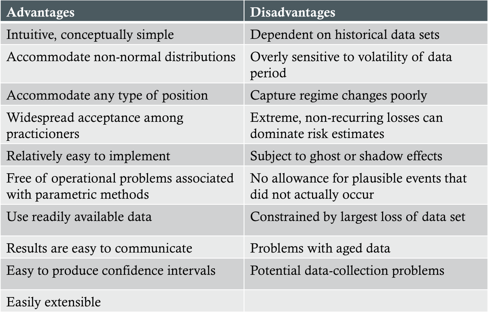

Introduction
- Non-parametric approaches aim to estimate risk measures without making strong assumptions about the relevant distribution
- Assumes the near future will be similar to the recent past
Compiling Historical Simulation Data
- P/Lt = ΣwiRi,t
- This is the P/L we would have earned on our current portfolio had we held it throughout the historical sample period
Estimation of Historical Simulation VaR and ES
- Basic HS - plotting data on a simple histogram and reading off the VaR from the results
- Bootstrapped HS - resampling from existing historical data set with replacement
- HS using non-parametric density estimation - treats data as if it were drawn from some unspecified empirical distribution function
Estimating Confidence Intervals for HS VaR and ES
- Order-statistics approach - provides a complete distribution function from which the confidence interval can be read
- Bootstrap approach - produces a bootstrapped histogram of resampled estimates rom which the confidence interval can be read
Weighted Historical Simulation
- Equal-weighted approach
- Age-weighted approach: wi = [λi-1(1-λ)]/(1-λn)
- Volatility-weighted approach
- Correlation-weighted approach
- Filtered approach
Overview of Non-parametric Methods
